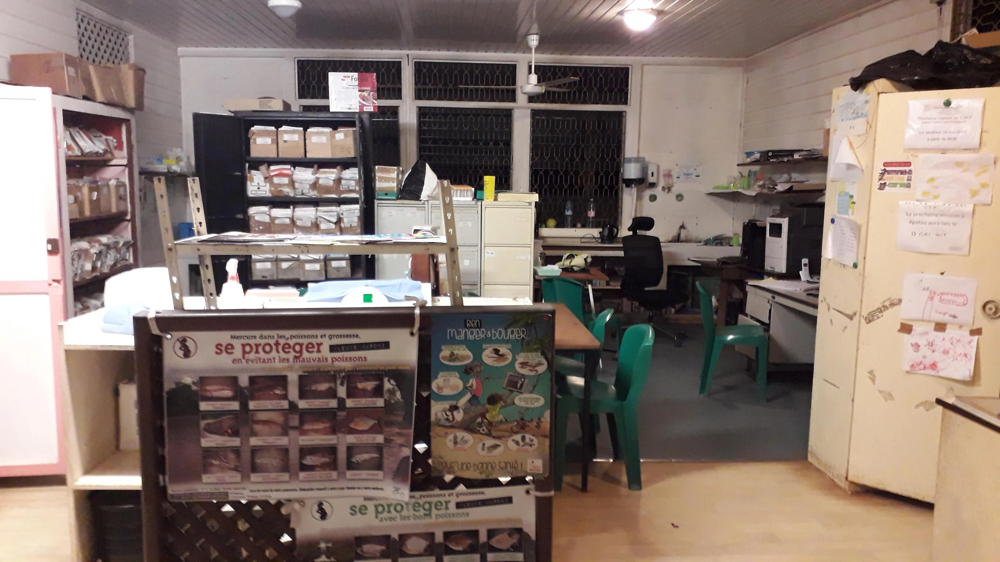
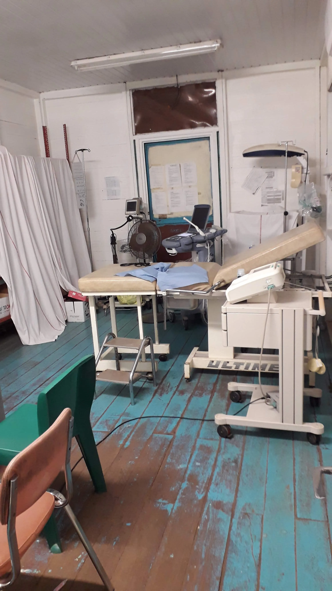
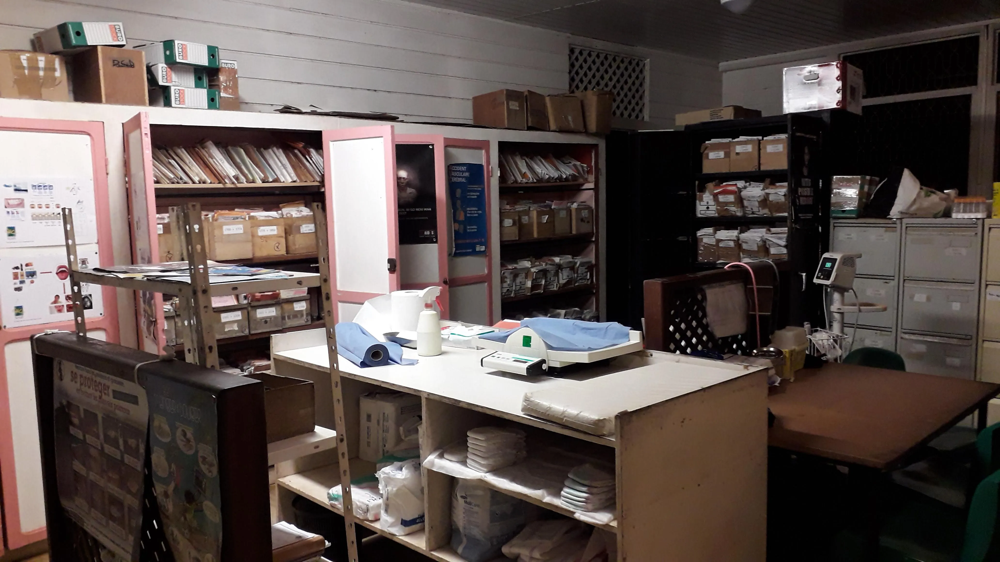
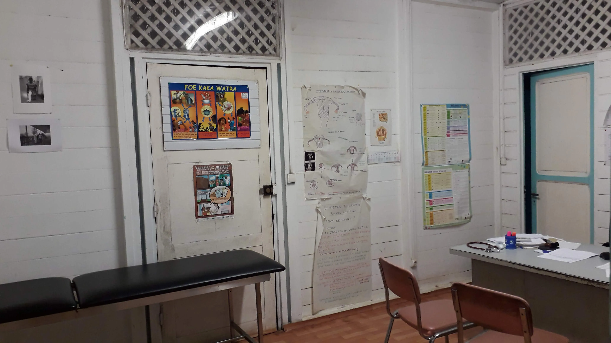
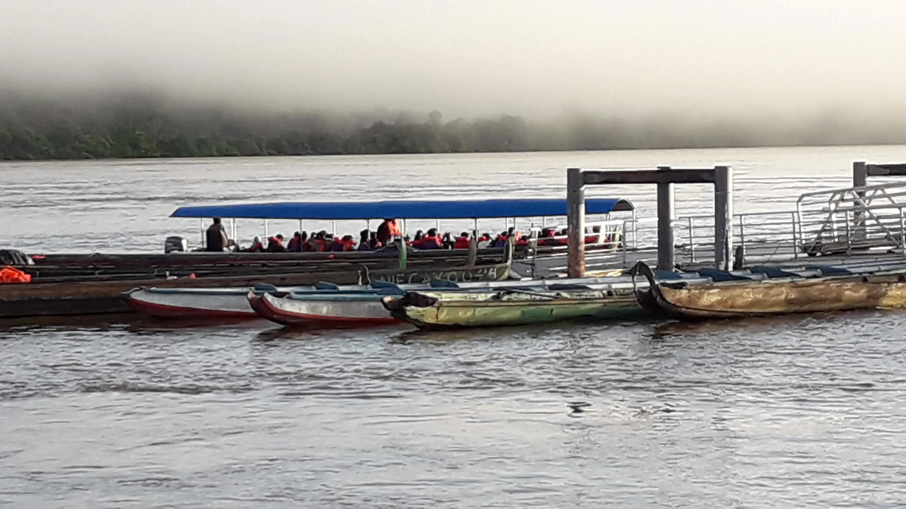
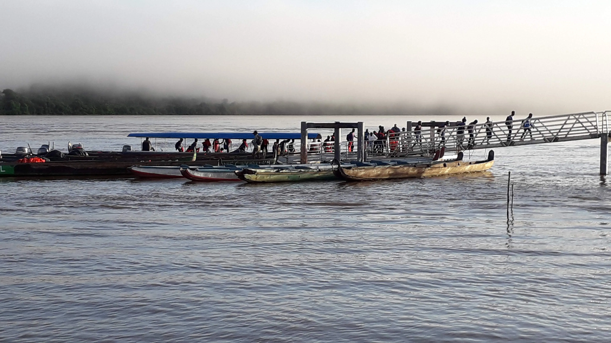
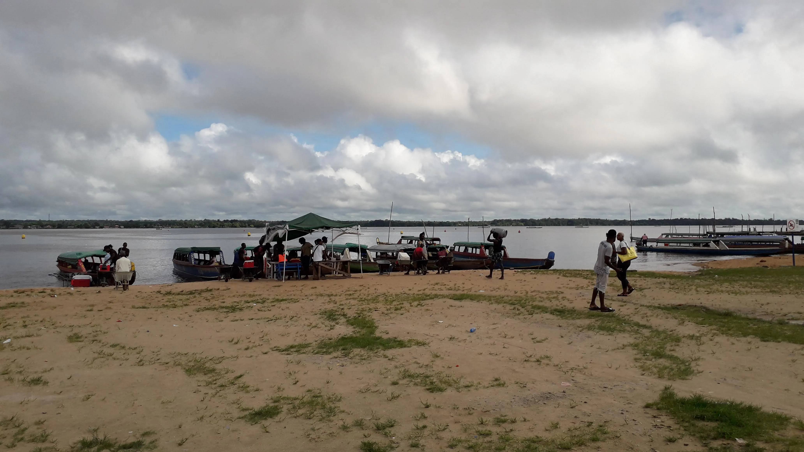
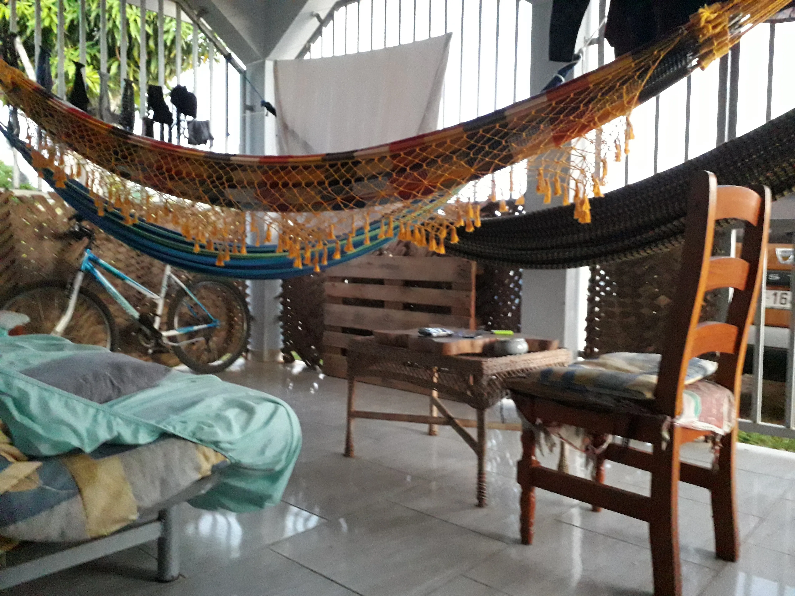

Le CDPS de Apatou
Il est situé à la fin de la N2 qui "doit" dans le futur rallier les communes situées le le long du Maroni et permettre à terme de désenclaver ces Communes jusqu'à Maripasoula voire Papïchton, mais quand?
J'y aurai vécu mon premier accouchement lors de mon premier passage, et j'y reviendrai bien plus tard lors d'un deuxième séjour, il restera le dernier CDPS ou j'aurai exercé.







